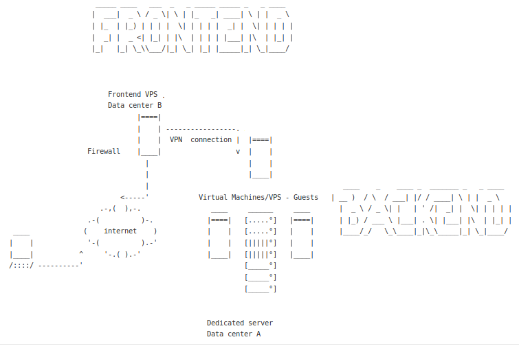

Jumping hosts
Sometimes it is only possible to access a remote server using ssh by first logging in to another server (or firewall/jump host).

This means having to authenticate twice and the chain can be long and not limited to just two hosts. I can only access the remote server named “Backend server” via ssh by first login into an intermediary server called “Firewall host” or “Jump host”. First, login to jump host:
$ ssh user@jumphost
Next, ssh through the intermediary system:
$ ssh user@backendserver
Or, use -tt, forcing “pseudo-tty” allocation:
$ ssh -tt jumphost ssh -tt backendserver
Alternatives to manually jumping about and making life much easier are ForwardAgent, ProxyCommand and ProxyJump. Starting from OpenSSH 7.3, released August 2016, the easiest way to pass through one or more jump hosts is with the ProxyJump directive.